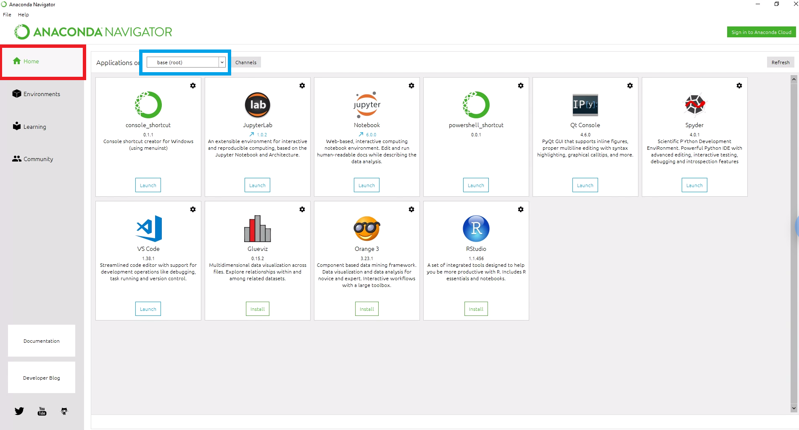

Anaconda Navigator 是一個圖形化介面。以往加裝python模組、甚至一些開發環境時， 是需要使用一些指令操作的，然而在這個介面下，我們大多只要按按滑鼠，打幾個關鍵字就可以完成任務。 並且，在此介面中，也可以完成虛擬環境的建造，滿足各種模組在支援性上的問題。 下面讓我們簡單介紹 Anaconda Navigator。不過，因為一開始安裝完Anaconda後， 不像一些應用程式會在桌面建立捷徑，怕有些人會找不到 Anaconda Navigator ，這裡提醒大家可以利用Search功能來找到他。

打開 Navigator 應用程式後一開始畫面會出現在首頁，也就是左邊欄位為Home的地方。 此頁面中主要整合了各個開發環境的應用程式，可以在此畫面中安裝這些應用程式。 此外，若擁有多個虛擬環境的使用者，可以由圖中藍色框框處更換想要安裝應用程式的環境。